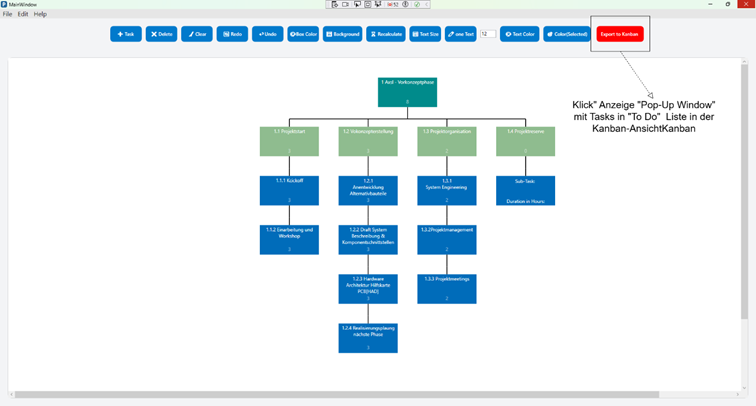
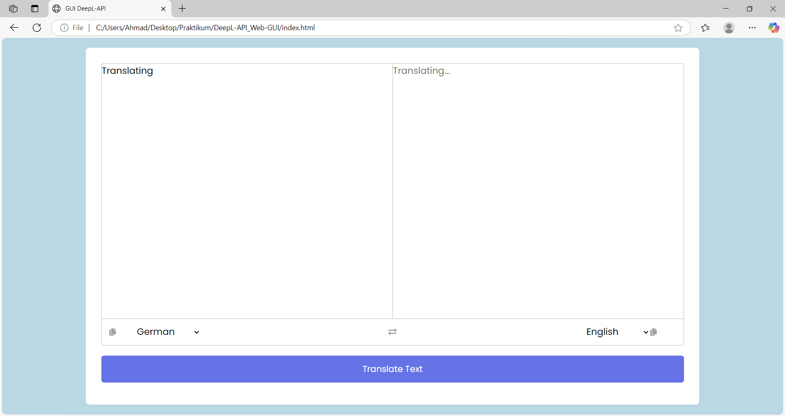

„PSP-Tool“ Erstellung und Verwaltung von
Projektstrukturplänen (work breakdown structure). Das Tool ermöglicht es, Projekte hierarchisch zu
strukturieren und deren Aufgaben effizient zu planen. Ich habe es in WPF.NET entwickelt.

In der Kanban-Ansicht soll der User manuell die exportierten Tasks aus der
”To Do”-Spalte in andere Spalten des Kanban mit ”drag und drop” verschieben können.
Ziel ist es, die Benutzerfreundlichkeit und Flexibilität des Tools zu erhöhen und agile
Arbeitsmethoden zu unterstützen.

Die Web-GUI dient als benutzerfreundliche Oberfläche zur Echtzeit-Übersetzung von Texten zwischen verschiedenen Sprachen.
Sie ermöglicht es Nutzern, Texte schnell und intuitiv zu übersetzen,
Sprachen auszuwählen und Ergebnisse zu kopieren oder weiterzuverwenden.